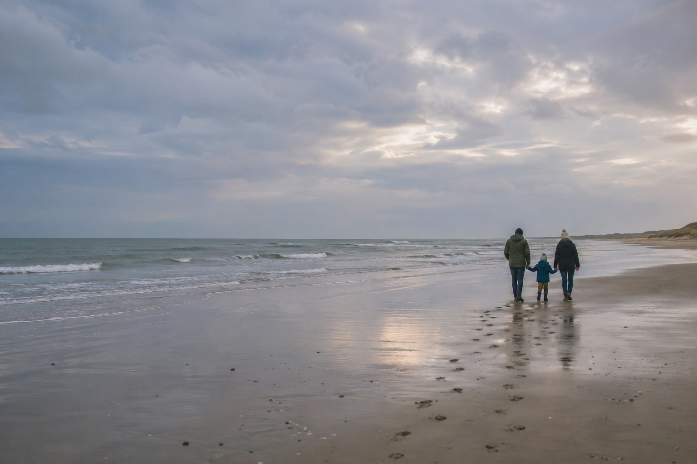

Momentro Guides · Make films people rewatch
How to choose video scenes that build feeling, not just chronology
The moments people remember are rarely the ones that explain every hour of the day. They are the ones that make the day feel like itself.

You do not need to show everything that happened
A trip may begin with an airport, continue through seven meals and end with a suitcase in a hallway. A birthday may start with decorations and end with clearing plates. That is chronology. It is true, but it is not always the part people want to watch again.
The scene that makes a film feel alive might be a child looking out of a train window, rain on the walk home, someone laughing before the candle is lit, or the quiet few seconds after everyone has left the beach.
A good selection is not a report of the day. It is a way back into how the day felt.
Look for changes, not just landmarks
When you scan a folder of clips, notice where something shifts. A door opens. The weather changes. Someone arrives. The room gets louder, then suddenly quiet. Those small changes give a viewer somewhere to lean in.
Landmarks and group shots still have a place. They tell us where we were and who came along. But one long view from the car or one familiar face turning toward the sea can carry more feeling than ten perfectly framed location clips.
For a travel film, try choosing one arrival, one ordinary in-between moment and one pause. For a family film, try one moment of anticipation, one shared reaction and one quieter ending.
Choose a few anchors first
Before you worry about the order, make a small set of anchors: perhaps five to twelve clips that you genuinely want to see again. They might not be your sharpest shots. They might be a little shaky or short. That is fine.
Ask three simple questions:
- Does this show a person or place becoming more itself?
- Would I recognise this moment even without the date?
- Does it make me want to know what comes next?
If a clip answers one of those, keep it in your selected folder. The rest of the film can grow around it.
Let ordinary scenes do some of the work
Not every chosen clip needs to be a highlight. A coffee on a rainy morning, shoes by the door, a hand passing a map, the soundless view from a train—these are often what make the bigger moments feel believable.
They also give the film room to breathe. A collection made only of big smiles, scenery and celebrations can feel like a slideshow. One ordinary detail makes the memory human again.
Use time in the order that serves the feeling
You can still follow the day loosely. Most films benefit from a sense of arriving somewhere, spending time there and then leaving. But do not force every clip into its original timestamp just because that is where it belongs in the folder.
A rainy street from the first morning may work better after a warm dinner, because it gives the ending a small sense of return. A quiet train shot may be the right opening even if it was filmed halfway through the trip. You are not changing what happened. You are making the memory easier to enter.
Bring a selected set into one calm review
Once you have a smaller set of anchors and in-between scenes, you no longer have to begin with an empty timeline. Bring those selected clips into a Momentro project on your computer and start the analysis. Larger collections can take time, depending on the footage and your computer, so it is a good moment to make dinner, take a walk or get on with the rest of your day.
When the draft is ready, you are still the editor. Review it, make one small adjustment if something feels wrong, then start export when you are happy. The aim is not to automate the memory; it is to spend less energy on the long, repetitive part.
Start with the scenes you would choose twice.
Momentro helps turn a selected set of family or travel clips into a draft you can review and export on your computer.